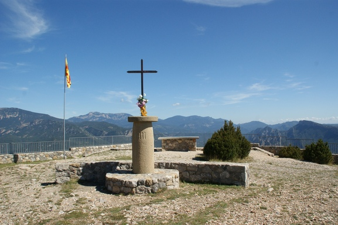
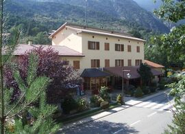
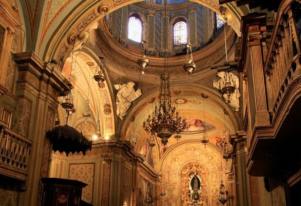

En aquest apartat trobaràs tot el contingut del web i un resum de totes les activitats
disponibles.
Portada
A la portada trobareu una presentació dels continguts principals del web, amb un accés
directe a cadascún d'ells. El títol del portal web està situat a la capçalera, a la part
superior. A la posició esquerra al capdamunt trobareu el menú de navegació que incorpora
links a totes les pàgines principals del web.
La Vall de Lord -> que enllaça amb la portada principal.
Categories -> que enllaça amb la pàgina on es mostren totes les activitats i punts
d'interés que destaquem de la Vall de Lord.
Presentació -> Amb una pàgina amb tot el detall del contingut del web.
Links -> On es troben tots els links oficials de la informació obtinguda per a la
construcció d'aquest lloc web.
Situació -> Trobareu un mapa més detallat amb els punts indicats de totes i cadascuna
de les experiències que es mostren a l'apartat de categories.
La portada comte amb un mapa de la situació general de la Vall de Lord, i un petit
submenú a tots els links amb la informació més detallada que s'ha emprat per a construïr
aquest lloc web.
Categories
El contingut de Categories es presenten totes les activitats i punts d'interés a
realitzar i visitar a la Vall de Lord. La secció està preparada amb un petit menú de
nevgació per filtrar segons la categoria que es prefereixi.
Les principals activitats presentades al lloc web són les següents:
Prats de Bacies - Natura
Mirador de la Creu del Codó - Natura
Restaurant les Fonts del Cardener - Gastronomia
Catedral de Solsona - Arquitectura
Esqui a Port del comte - Oci
Activitats d'aventura - Oci
Ribera salada i Pont de clop - Natura
I corresponents imatges en mateix ordre:



Links
En la secció de links es troben tots els enllaços oficials del portal web i links a
contingut de tercers utilitzats en aquesta web.
Els recursos obtingut són:
Viquipèdia ( Wikipedia.org)
Turisme del Solsonès - La Vall de Lord
Oficina de Turisme del Vall de Lord
Reportatge sobre Sant Llorenç de Morunys a TV3, programa "El Foraster"
Open Weather API
Google Map
Pixabay free images
Blog Ciutat del motor - Escapada a la Vall de Lord
Situacio
En la secció de situació es presenta les dades meteorològiques actuals, conectades a la
API de Open Weather. A més a més, s'afegeix un mapa amb el punt central de la Vall de
Lord, quasi a l'entrada de Sant Llorenç de Morunys, per situar al visitant i poder
obrir-ho amb l'aplicació de google Maps.
El mapa disponible està en format híbrid, pla del relleu més noms importants i de
localitats incloses. La vista prèvia és la següent:
Multimèdia
En aquesta secció es poden visualitzar videos sobre informació i reportatges importants
sobre la Vall de Lord. Aquest web conté els següents continguts multimèdia:
Índex multimèdia
En aquest enllaç podeu consultar tot el
contingut multimèdia. Aquesta
secció us permet utilitzar-la relacionat amb la Vall de Lord, informació d'interés i
reportatges.